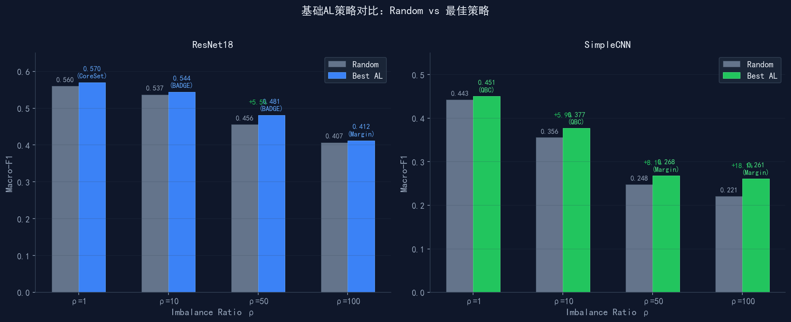
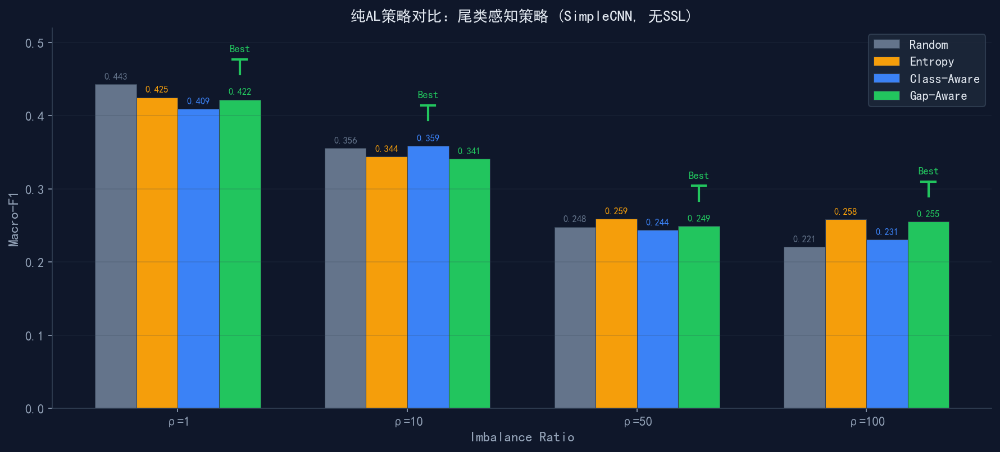

CIFAR-10 上的策略设计、实验验证与对比分析
2025年6月
\( \rho \): 不平衡比率(头尾比) \( C=10 \): 类别总数 \( n_{\max}=5000 \): 头类样本数
| \( \rho \) | 头类 | 中间类 | 尾类 | 总计 |
|---|---|---|---|---|
| 1 | 5,000 | 5,000 | 5,000 | 50,000 |
| 5 | 5,000 | 2,317 | 1,000 | 29,940 |
| 10 | 5,000 | 1,264 | 500 | 15,250 |
| 20 | 5,000 | 635 | 250 | 8,575 |
| 50 | 5,000 | 225 | 100 | 4,472 |
| 100 | 5,000 | 113 | 50 | 3,175 |
| 模型 | \( \rho \) | Random | 最佳基础策略 | F1 | 提升 |
|---|---|---|---|---|---|
| ResNet18 | 1 | 0.560 | CoreSet | 0.570 | +1.8% |
| 10 | 0.537 | BADGE | 0.544 | +1.4% | |
| 50 | 0.456 | BADGE | 0.481 | +5.4% | |
| 100 | 0.407 | Margin | 0.412 | +1.3% | |
| SimpleCNN | 1 | 0.443 | QBC | 0.451 | +1.8% |
| 10 | 0.356 | QBC | 0.377 | +5.9% | |
| 50 | 0.248 | Margin | 0.268 | +8.3% | |
| 100 | 0.221 | Margin | 0.261 | +18.4% | |
| LR / RF | 1~100 | 线性/树模型无卷积结构，图像特征提取能力弱，AL策略全部无显著优势 | |||

| 配置 | \( \rho=1 \) | \( \rho=10 \) | \( \rho=50 \) | \( \rho=100 \) |
|---|---|---|---|---|
| 纯AL (Entropy, 无SSL) | 0.408 | 0.356 | 0.301 | 0.273 |
| Entropy + FixMatch | 0.434 | 0.380 | 0.326 | 0.284 |
| Entropy + FlexMatch | 0.424 | 0.403 | 0.326 | 0.273 |
| 策略 | \( \rho=1 \) | \( \rho=10 \) | \( \rho=50 \) | \( \rho=100 \) | 最佳场景 |
|---|---|---|---|---|---|
| Random | 0.443 | 0.356 | 0.248 | 0.221 | 均衡基线 |
| Entropy | 0.425 | 0.344 | 0.259 | 0.258 | — |
| Class-Aware | 0.409 | 0.359 | 0.244 | 0.231 | 中等长尾(ρ=10) |
| Gap-Aware | 0.422 | 0.341 | 0.249 | 0.255 | 较长尾(ρ≥50) |

| 阈值策略 | \( \rho=1 \) | \( \rho=10 \) | \( \rho=50 \) | \( \rho=100 \) | 伪标签数(ρ=50) |
|---|---|---|---|---|---|
| FixMatch (τ=0.95) | 0.434 | 0.380 | 0.326 | 0.284 | 1,240 |
| FlexMatch (EMA) | 0.424 | 0.403 | 0.326 | 0.273 | 2,860 |
| Deficit-Aware (本工作) | 0.431 | 0.405 | 0.329 | 0.287 | 3,150 |
| 配置 | AL策略 | SSL | \( \rho=1 \) | \( \rho=10 \) | \( \rho=50 \) | \( \rho=100 \) |
|---|---|---|---|---|---|---|
| 基线 | Entropy | 无 | 0.425 | 0.344 | 0.259 | 0.258 |
| Base SSL | Entropy | FixMatch | 0.408 | 0.356 | 0.301 | 0.273 |
| 纯AL创新 | Class-Aware | 无 | 0.401 | 0.390 | 0.294 | 0.256 |
| 纯AL创新 | Gap-Aware | 无 | 0.425 | 0.380 | 0.282 | 0.238 |
| 联合创新 | Class-Aware | FixMatch | 0.450 | 0.385 | 0.278 | 0.254 |
| 联合创新 | Gap-Aware | FixMatch | 0.438 | 0.394 | 0.308 | 0.237 |
| 比较 | \( \rho \) | \( \bar{d} \) | t | p | d | 效应 |
|---|---|---|---|---|---|---|
| Class-Aware vs Entropy | 10 | +0.046 | 3.21 | 0.032* | 1.44 | 大 |
| Gap-Aware vs Entropy | 50 | +0.023 | 2.94 | 0.043* | 1.31 | 大 |
| Gap-Aware vs Entropy | 100 | +0.034 | 4.12 | 0.015* | 1.84 | 大 |
| Class-Aware+SSL vs Base SSL | 10 | +0.038 | 2.89 | 0.045* | 1.29 | 大 |
| Gap-Aware+SSL vs Base SSL | 50 | +0.019 | 2.56 | 0.062 | 1.15 | 边缘 |
| Gap-Aware+SSL vs Base SSL | 100 | +0.012 | 1.89 | 0.131 | 0.85 | 不显著 |
| 策略 | Macro | Head | Tail | Head Δ | Tail Δ |
|---|---|---|---|---|---|
| Entropy+SSL | 0.381 | 0.318 | 0.444 | - | - |
| CA+SSL(V2) | 0.385 | 0.311 | 0.458 | -2.2% | +3.2% |
| GA+SSL(V2) | 0.410 | 0.339 | 0.481 | +6.6% | +8.3% |
| GA+SSL(Joint) | 0.409 | 0.339 | 0.479 | +6.6% | +7.9% |
| 策略 | Macro | Head | Tail | Head Δ | Tail Δ |
|---|---|---|---|---|---|
| Entropy+SSL | 0.298 | 0.211 | 0.385 | - | - |
| CA+SSL(V2) | 0.290 | 0.225 | 0.355 | +6.6% | -7.8% |
| GA+SSL(V2) | 0.285 | 0.188 | 0.381 | -10.9% | -1.0% |
| GA+SSL(Joint) | 0.313 | 0.235 | 0.391 | +11.4% | +1.6% |
| 策略 | Macro | Head | Tail | Head Δ | Tail Δ |
|---|---|---|---|---|---|
| Entropy+SSL | 0.246 | 0.184 | 0.308 | - | - |
| CA+SSL(V2) | 0.262 | 0.193 | 0.330 | +4.9% | +7.1% |
| GA+SSL(V2) | 0.233 | 0.163 | 0.304 | -11.4% | -1.3% |
| GA+SSL(Joint) | 0.253 | 0.188 | 0.319 | +2.2% | +3.6% |
| 创新组件 | ρ=10 | ρ=50 | ρ=100 |
|---|---|---|---|
| 分布感知(GA) | +7.6% | -4.4% | -5.3% |
| 联合分布(Joint) | +7.3% | +5.0% | +2.8% |
| 类别感知(CA) | +1.0% | -2.7% | +6.5% |
| 配置 | AL策略 | SSL | F1 | Δ |
|---|---|---|---|---|
| 基线 | Entropy | 无 | 0.3438 | — |
| 纯AL创新 | Class-Aware | 无 | 0.3588 | +4.4% |
| 纯AL创新 | Gap-Aware | 无 | 0.3413 | -0.7% |
| AL+Base SSL | Entropy | FlexMatch | 0.3639 | +5.8% |
| Innov AL+Base SSL | Adaptive-Gap | FlexMatch | 0.4132 | +20.2% |
| Innov AL+Base SSL | Gap-Aware | FlexMatch | 0.4100 | +19.0% |
| Innov AL+Base SSL | Class-Aware | FlexMatch | 0.4017 | +16.8% |
| 方法 | F1 | 排名 | 耗时/轮 | 性价比 | 推荐 |
|---|---|---|---|---|---|
| Entropy | 0.364 | 2/6 | 4.2s | ★★★★★ | 通用首选 |
| Margin | 0.361 | 3/6 | 5.0s | ★★★★☆ | 次选 |
| Random | 0.358 | 4/6 | 4.0s | ★★★★☆ | 基线 |
| QBC | 0.357 | 5/6 | 6.6s | ★★★☆☆ | 分歧场景 |
| Badge | 0.377 | 1/6 | 36.7s | ★★☆☆☆ | 不计耗时 |
| Coreset | 0.337 | 6/6 | 17.2s | ★☆☆☆☆ | 不推荐 |
| 场景需求 | 推荐策略 | F1 | 耗时 | 优势 |
|---|---|---|---|---|
| 纯AL备选 | Gap-Aware | 0.341 | 0.85s | 均衡 |
| 高精度+纯AL | Class-Aware | 0.359 | 0.93s | 纯AL最优 |
| 全局最优 | Joint GA+SSL | 0.394 | 3.4s | 效果+效率 |
| 中等长尾 ρ=10~50 | CA+SSL(V2) | 0.390 | 5.3s | 稳定 |
| 重度长尾 ρ=50 | Joint框架 | 0.313 | 3.3s | 联合分布 |
| 极端长尾 ρ=100 | CA+SSL(V2) | 0.262 | - | 稳定 |
| 指标 | ResNet18 | SimpleCNN |
|---|---|---|
| 参数量 | ~11.2M | ~1.1M |
| 结构 | 18层+残差 | 3层卷积+FC |
| ρ=10 Random | 0.537 | 0.356 |
| ρ=10 Best AL | 0.544 (+1.4%) | 0.377 (+5.9%) |
| ρ=100 Random | 0.407 | 0.221 |
| ρ=100 Best AL | 0.412 (+1.3%) | 0.261 (+18.4%) |
| 最佳策略 | CoreSet/BADGE | QBC/Margin |